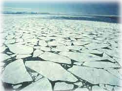

|  |
During that period, IIASA's web rose to one of the most visited scientific sites in Europe. Interactive CD-ROMs were introduced for dissemination of research results. Important new scientific activities were established, such as Social Security Reform, Natural Catastrophes and Developing Countries, and Transitions to New Technologies. In addition to his role as Director, he was an active scientist, publishing e. Ice Ages and Astronomical Causes -- Data, Spectral Analysis and Mechanisms (with Richard A. |